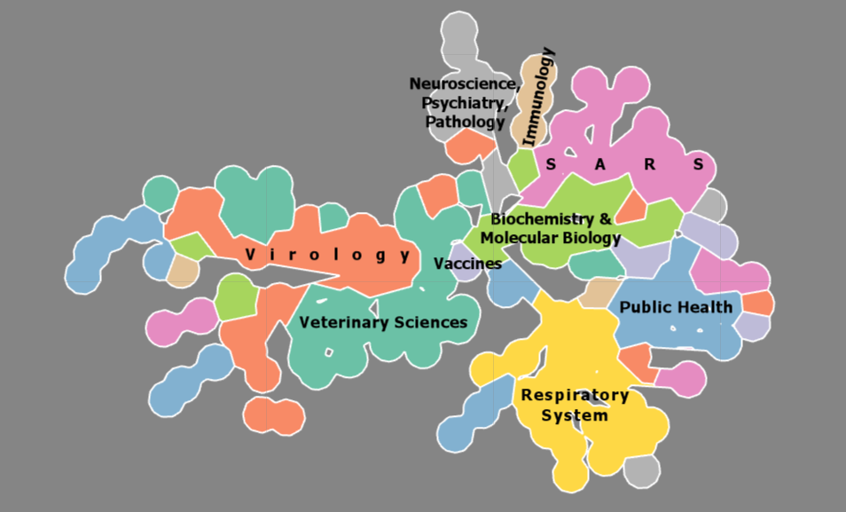
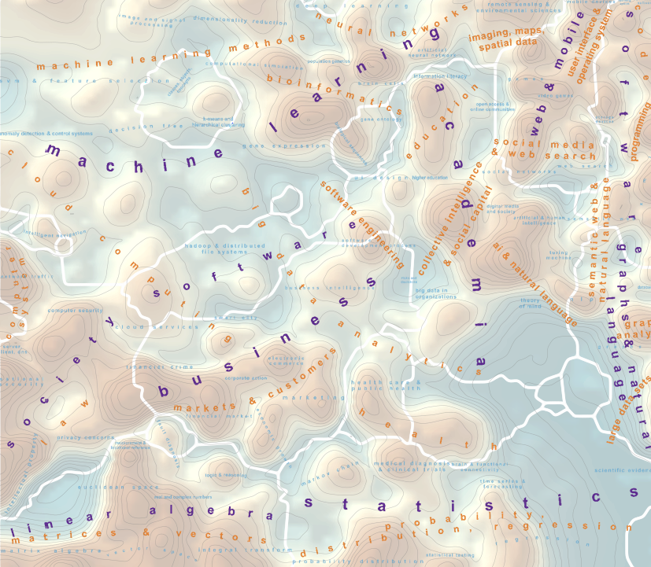
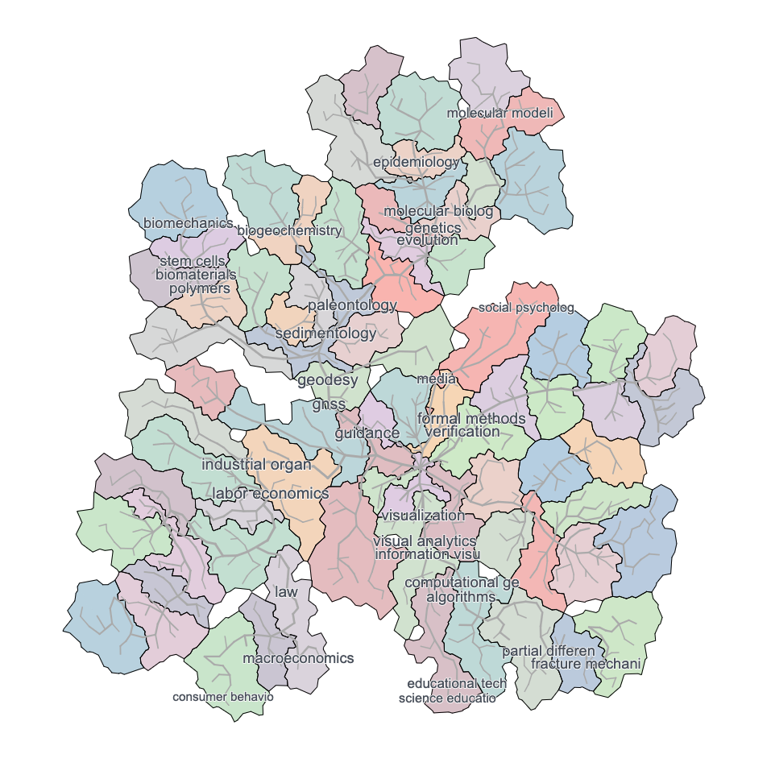

XI.3 Mapping Global News

XIII.3 Megaregions of the US

Coronavirus SoS

Data Science & Analytics Explorer

Multi-level Visualization of Google Research Topics

Click the image above to view interactive Macroscope.
Dealing with the ongoing human coronavirus pandemic is difficult, no matter which term you use: SARS-CoV-2, 2019-nCoV, or COVID-19. We have all learned that addressing a pandemic like this requires many people working together from different backgrounds and accustomed to speaking in the language of sometimes wildly different domains. In such a circumstance, how can one develop shared understanding? From urban planning to national defense, maps have long served precisely such a role, laying the foundation for exploration, learning and informed decision-making. Wouldn't it, therefore, be great if such a "map" existed for the coronavirus research domain? It should help in diverse scenarios, whenever it is important to cut through the multitude of opinions and overwhelming flood of information, whether you are designing educational activities, attempting to form multidisciplinary teams to address the current crisis, or communicating with diverse stakeholders. What is presented here is a knowledge map of coronavirus research. Based on an inventory of more than fifty years of research in this field, going back to the late 1960s, the map contains the main contributing research fields and scientific concepts in a compact visual form. It was created through a combination of scientometric network analysis and geographic information system (GIS) technology and is the basis for two products: (1) a guided tour of the diverse topics addressed by researchers and the methods they employ, presented in the form of a story map; (2) a dashboard app that links concepts encountered in the map to live Wikipedia entries and scientific publications.
Authors: André Skupin
References
Dealing with the ongoing human coronavirus pandemic is difficult, no matter which term you use: SARS-CoV-2, 2019-nCoV, or COVID-19. We have all learned that addressing a pandemic like this requires many people working together from different backgrounds and accustomed to speaking in the language of sometimes wildly different domains. In such a circumstance, how can one develop shared understanding? From urban planning to national defense, maps have long served precisely such a role, laying the foundation for exploration, learning and informed decision-making. Wouldn't it, therefore, be great if such a "map" existed for the coronavirus research domain? It should help in diverse scenarios, whenever it is important to cut through the multitude of opinions and overwhelming flood of information, whether you are designing educational activities, attempting to form multidisciplinary teams to address the current crisis, or communicating with diverse stakeholders. What is presented here is a knowledge map of coronavirus research. Based on an inventory of more than fifty years of research in this field, going back to the late 1960s, the map contains the main contributing research fields and scientific concepts in a compact visual form. It was created through a combination of scientometric network analysis and geographic information system (GIS) technology and is the basis for two products: (1) a guided tour of the diverse topics addressed by researchers and the methods they employ, presented in the form of a story map; (2) a dashboard app that links concepts encountered in the map to live Wikipedia entries and scientific publications.
Authors: André Skupin
References
- Center for Information Convergence and Strategy (CICS). 2021. Home Page. Accessed March 22, 2021. https://cics.sdsu.edu.
Click the image above to view interactive Macroscope.
Welcome to the first comprehensive base map of Data Science & Analytics! Think of this as a topographic map of the world of big data, from foundational concepts to societal implications. It includes a GPS-like functionality for projecting any text query onto the map. We set out to make this complex domain more accessible to anyone. Whether one is a complete novice or a seasoned expert, chances are that there is something to learn from this detailed, multi-scale visualization. Whether it's "blockchain" or "agile development" or "copyright law," they're all there, in contexts and patterns derived from 100,000+ domain artifacts. If you've ever used an interactive map, you already know how to navigate this one: zooming and panning — that's it! Like in a geographic map, when zoomed out, one sees the main "countries" that make up Data Science & Analytics. Those top-level regions are labeled in purple and delineated with white borders. When zooming in, more detailed structures are revealed, first labeled in orange, then in blue and gray. Mountains indicate high topical focus and specificity, like the one labeled "cloud services - cloud infrastructure - virtualization." Valleys indicate more general, broad and mixed concepts, like "open access & online communities". Deeply cut valleys, especially when coinciding with a boundary demarcation, correspond to strong separation of neighboring mountain ranges. The Data Science & Analytics Explorer web app was developed by BigKnowledge, with support by the Business-Higher Education Forum (BHEF), an organization of Fortune 500 CEOs, university presidents, and other leaders dedicated to the creation of a highly skilled workforce.
Authors: André Skupin
References
Welcome to the first comprehensive base map of Data Science & Analytics! Think of this as a topographic map of the world of big data, from foundational concepts to societal implications. It includes a GPS-like functionality for projecting any text query onto the map. We set out to make this complex domain more accessible to anyone. Whether one is a complete novice or a seasoned expert, chances are that there is something to learn from this detailed, multi-scale visualization. Whether it's "blockchain" or "agile development" or "copyright law," they're all there, in contexts and patterns derived from 100,000+ domain artifacts. If you've ever used an interactive map, you already know how to navigate this one: zooming and panning — that's it! Like in a geographic map, when zoomed out, one sees the main "countries" that make up Data Science & Analytics. Those top-level regions are labeled in purple and delineated with white borders. When zooming in, more detailed structures are revealed, first labeled in orange, then in blue and gray. Mountains indicate high topical focus and specificity, like the one labeled "cloud services - cloud infrastructure - virtualization." Valleys indicate more general, broad and mixed concepts, like "open access & online communities". Deeply cut valleys, especially when coinciding with a boundary demarcation, correspond to strong separation of neighboring mountain ranges. The Data Science & Analytics Explorer web app was developed by BigKnowledge, with support by the Business-Higher Education Forum (BHEF), an organization of Fortune 500 CEOs, university presidents, and other leaders dedicated to the creation of a highly skilled workforce.
Authors: André Skupin
References
- BigKnowledge. 2020. “Data Science & Analytics. Mapped.” July 5, 2020. Accessed March 22, 2021. https://storymaps.arcgis.com/stories/0e8ae7ab747042598da6545f6bb1c98f.
- BigKnowledge. 2021. Home Page. Accessed March 22, 2021. https://bigknowledge.net.
- Open Geospatial Consortium. 2021. “Geospatial Technology Explorer.” Accessed March 22, 2021. https://www.ogc.org/techexplorer.
Click the image above to view interactive Macroscope.
We visualize a network of topics generated by extracting data from Google scholar. The Google Topics graph is obtained from Google Scholar academic research profiles. On Google Scholar, researchers self-report the topics they work on, giving a natural way to find associated topics. We started with the top 1,000 universities as given by CWUR and extracted data for all corresponding researchers. After some data cleaning and processing (e.g., merging “algorithm” and “algorithms”) we obtained a topic graph with 34,774 nodes and 646,582 edges. The weight of each node is determined by the number of people who reported working on that topic. For this visualization, we consider a subgraph induced by the top 5,483 nodes and compute a hierarchy of trees that enables semantic zooming in the interactive visualization. In the bottom level, all nodes are shown, while higher levels show more popular topics. Each level in this hierarchy is represented by a tree, spanning the top-k nodes. The hierarchy is created with the help of a multi-level Steiner tree algorithm. The multi-level Steiner tree ensures that if a node or edge is present at a given level, it must also be present in every level below. The interactive visualization is constructed with the Zoomable Multi-Level Tree (ZMLT) approach. We assign different edge lengths to edges based on the level in which they first appear, with edges that appear in high levels having long lengths and edges that appear in lower levels having short lengths. The ZMLT approach lays out the multi-level tree while maintaining two guarantees (G1-G2) and optimizing two criteria (C1-C2): G1: no crossings: every tree in the hierarchy should be drawn without crossings G2: no overlaps: all nodes at given (and higher) level are labeled without overlaps C1: desired edge lengths: the algorithm aims to realize desired edge lengths C2: compactness: the algorithm aims to minimize the total drawing area Finally, we provide a map-like visualization of the hierarchy, by clustering related topics. This step uses the GMAP framework to define the cluster areas. We also provide several basic map features: semantic zooming (given by the defined layers), searching, mouse-over for more information, etc. We show both the map and the current level of the node-link diagram.
Authors: Kathryn Gray, Mingwei Li, Reyan Ahmed, Stephen Kobourov, Katy Börner
References
We visualize a network of topics generated by extracting data from Google scholar. The Google Topics graph is obtained from Google Scholar academic research profiles. On Google Scholar, researchers self-report the topics they work on, giving a natural way to find associated topics. We started with the top 1,000 universities as given by CWUR and extracted data for all corresponding researchers. After some data cleaning and processing (e.g., merging “algorithm” and “algorithms”) we obtained a topic graph with 34,774 nodes and 646,582 edges. The weight of each node is determined by the number of people who reported working on that topic. For this visualization, we consider a subgraph induced by the top 5,483 nodes and compute a hierarchy of trees that enables semantic zooming in the interactive visualization. In the bottom level, all nodes are shown, while higher levels show more popular topics. Each level in this hierarchy is represented by a tree, spanning the top-k nodes. The hierarchy is created with the help of a multi-level Steiner tree algorithm. The multi-level Steiner tree ensures that if a node or edge is present at a given level, it must also be present in every level below. The interactive visualization is constructed with the Zoomable Multi-Level Tree (ZMLT) approach. We assign different edge lengths to edges based on the level in which they first appear, with edges that appear in high levels having long lengths and edges that appear in lower levels having short lengths. The ZMLT approach lays out the multi-level tree while maintaining two guarantees (G1-G2) and optimizing two criteria (C1-C2): G1: no crossings: every tree in the hierarchy should be drawn without crossings G2: no overlaps: all nodes at given (and higher) level are labeled without overlaps C1: desired edge lengths: the algorithm aims to realize desired edge lengths C2: compactness: the algorithm aims to minimize the total drawing area Finally, we provide a map-like visualization of the hierarchy, by clustering related topics. This step uses the GMAP framework to define the cluster areas. We also provide several basic map features: semantic zooming (given by the defined layers), searching, mouse-over for more information, etc. We show both the map and the current level of the node-link diagram.
Authors: Kathryn Gray, Mingwei Li, Reyan Ahmed, Stephen Kobourov, Katy Börner
References
- Ahmed, Reyan, Patrizio Angelini, Faryad Darabi Sahneh, Alon Efrat, David Glickenstein, Martin Gronemann, Niklas Heinsohn, Stephen G. Kobourov, Richard Spence, Joseph Watkins, and Alexander Wolff. 2019. “Multi-level Steiner Trees.” ACM Journal of Experimental Algorithmics 24 (2.5).
- Burd, Randy, Kimberly Andrews Espy, Md Iqbal Hossain, Stephen Kobourov, Nirav Merchant, and Helen Purchase. 2018. “GRAM: Global Research Activity Map.” In Proceedings of the 2018 International Conference on Advanced Visual Interfaces, 1–9.
- Center for World University Rankings. 2021. Home Page. Accessed March 22, 2021. http://cwur.org.
- De Luca, Felice, Iqbal Hossain, Kathryn Gray, Stephen Kobourov, and Katy Börner. 2019. “Multi-level Tree Based Approach for Interactive Graph Visualization with Semantic Zoom.” arXiv, June 14, 2019.
- Gansner, Emden R., Yifan Hu, and Stephen Kobourov. 2010. “GMap: Visualizing Graphs and Clusters as Maps.” In IEEE Pacific Visualisation Symposium, 201–208. Los Alamitos, CA: IEEE Computer Society.
- Gray, Kathryn, Mingwei Li, Reyan Ahmed, Stephen Kobourov, and Katy Börner. 2021. “Multi-level Tree-Based Approach for Interactive Graph Visualization.” EUROGRAPHICS 2021 40 (3).